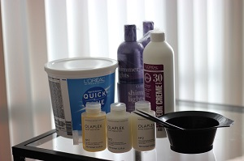
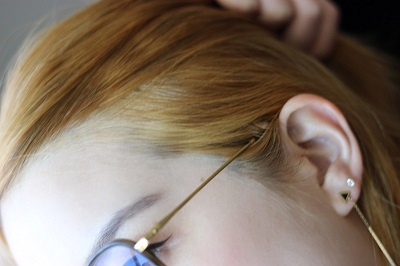
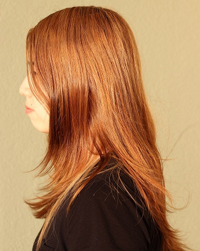
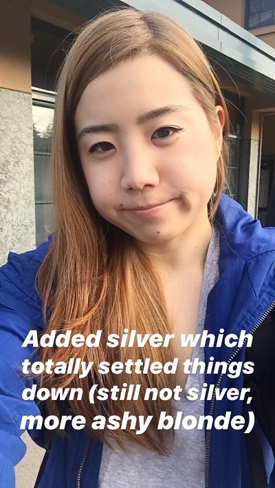
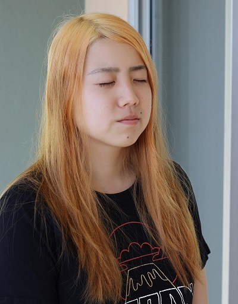
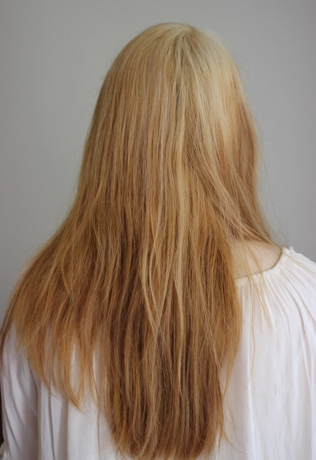
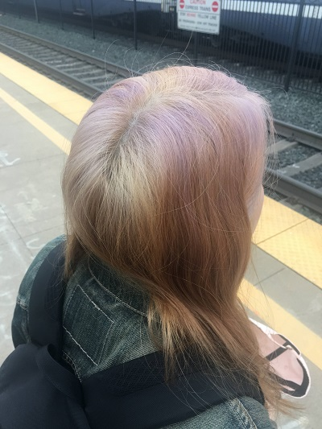

As a typical femme-person-about-to-get-married, I had grown my hair out for the wedding. The 20 inches of thick, healthy hair performed well at the wedding, and by that time, I was so sick of having the same hair. Historically I had done all sorts of stuff, color, ombre, side-buzz… and finally, I could unleash my creativity and apply the scientific method on this long, substantive canvas once again.
I used to get my hair bleached and colored at a salon in Berkeley. The first time around, it cost $368 and something like 6 hours (two sessions, 3 hours each). My hair is extremely thick and numerous, another East Asian American friend of mine had her virgin hair lifted to a Level 8~9 in one bleach sitting, and that definitely reduces the cost and time it takes.
Salon results were beautiful, but I wanted to try the bleach & color myself this time because of (1) convenience, (2) price, (3) challenge. I don’t like sitting at a salon for hours, and not have the freedom of eating, going to the bathroom, and entertaining myself with whatever I want. I assumed that doing my own hair would cost a lot less, because a hairdresser is extremely involved during bleach & color process; doing it myself (with the help of my spouse) means that the labor cost is free and the financial cost is supplies-only. Finally, I enjoy the challenge of learning something new and executing it. The research about how hair bleach/toner/dye works, chemistry behind Olaplex, all of this is super fun and while doing it is much harder than it looks, I just wanted to try.
Disclaimer, I’m obviously not a professional, so try things at your own risk, as I did. Use gloves!!
** TL;DR**
- My hair didn’t damage much after 3 rounds of bleach with 2 week spaces between with Olaplex.
- Hair comes out more evenly if someone else does it. Don’t forget to use gloves!
- Wella T18 can subtly change the tone of a Level 7 hair but not that much.
- Don’t try pastel tones if you’re not at least Level 9 all over.
- Supplies cost $227 altogether, but there is a lot left.
- Watch lots of YouTube videos, have fun, chill out, everything fades someday.
![TLDR(../../img/hair-2019/tldr.png)
Table of Contents
July 22 - Bleach Round #1
August 3 - Bleach Round #2
August 4 - Silver Dye
August 17 - Bleach Round #3
August 18 - Lavender Dye
August 19 - Raspberry & Rose Gold Dye
Research
To prepare myself for this expedition, I did research and purchased necessary equipment.
Here are some that stood out to me:
- How To Dye Your Asian Hair Blonde - The Only Guide You’ll Need: I basically followed this guide for the supplies.
- ブリーチ1～6回でどのくらい明るくなる？回数ごとの明るさ比較 : This Japanese article was useful for me to expect how light my hair should get after each round of bleach.
- Mrs. Gorjesss: “DIY BLACK TO BLONDE AT HOME || No Damage”, Jenna alexis: “Bleaching My Hair with Olaplex (black/brown to blonde)”: These two videos on YouTube were great intros to bleaching at home with Olaplex.
- Lab Muffin: HOW DOES OLAPLEX HAIR TREATMENT WORK?: Explains how peroxide caps S-H with a sulfate group, which keeps the disulfide bonds broken, but bis-aminopropyl diglycol dimaleate from Olaplex extends the sulfurs to make the hair stronger.
- What is the Difference Between Ammonia and Ammonia-free Hair color?: I read this when considering the Wella T18 toner as an option for getting the yellow/orange toned out before color, and explains how ammonia allows hair follicles to swell and absorb dye better.
I also watched basically all of the videos that come up on YouTube for “Bleaching hair at home”, all of them were informative and some of the folks have really great techniqueue that I learned from (mostly segmenting hair, covering it with bleach layer by layer, and keeping track of which part has been covered and which has has not.)
I purchased stuff. More on this in the How much did it actually cost? section.

I started off with this:
I would consider this a Level 2 hair. We’ll find that it has strong red undertones as we try to lift that off.
Bleach Round One
July 22, 2019
Supplies used:
- 2.5 scoops of bleach
- 5 scoops of the 30 volume developer
- 1⁄8 oz Olaplex No. 1
*Note that 1 scoop here means 1.3 ounces!! I measured using the scoop that came with the bleach powder.
I started off with 2 scoop bleach + 4 scoops 30 volume developer, split my hair to four sections, started from the bottom and worked up. I had my spouse do the roots. Turns out I had missed lots of sections. I made more of the mixture, but my spouse didn’t really realize how much product he was supposed to use, so it ended up looking pretty spotty. As you can tell on one of my side pictures, but there was a very bright spot on the top of my head from me putting the bleach early on in one section of the roots.
I ended up having the bottom parts sit with bleach for about an hour because the process took such a long time. After a quick shower, I did a bit of touch up with the remaining bleach mixture on the very obviously still-untouched front bits.
This is under indirect light:
Learnings:
- Use more product!
- Work fast!
- So far, no damage and clearly not light enough to put in any color. Let’s keep going…
Bleach Round Two
August 3, 2019
Supplies used:
- ~3 scoops of bleach
- ~6 scoops of 30 volume developer
- 1⁄4 oz Olaplex No. 1
Note that I waited 2 weeks before doing a round of bleach. I keep doing this just as a safety measure not to damage my hair.
This time, my spouse did all the work. He covered the dark parts remaining from last round of bleach, we left it on for 10 minutes, and proceeded to do the remaining in sections. The roots were done at the end to avoid hot roots. I mixed the bleach formula in small batches to keep them “fresh”, not sure if that had any impact, but this round seemed more even than the last time. I left in the bleach for long enough to see my roots lift to the level as the other hair.
The result is orange. It does not look good with my skin. I kept this for one day, but I knew I didn’t want to keep it for more than a day.

Learnings:
- Someone else doing your hair > trying to do your own hair
- Still no damage, let’s see how I feel about another round of bleach or just add color.
Silver Dye
August 4, 2019
First appearance of DYE!! Finally, something other than bleaching!
This is the dye that I used.

I did this part alone, using almost all of the tube. This part was pretty straightforward, I just soaked the hair with the dye and let it sit for 30 minutes.

And under indirect lighting:

You can tell the hair settled down a lot, and it looks much better than the day before.

Learnings:
- You can use dye as toner.
Bleach Round Three
August 17, 2019
Supplies Used:
- 2.5 scoops of bleach + maybe another half scoop for correction
- Double the amount of bleach for 30 volume developer
- 1⁄4 oz Olaplex No. 1
Though in the last round of bleach, I learned that it’s better when my spouse does all my hair, I could not resist, and bleached my own hair. This time, after watching the various techniques used by YouTubers doing their own roots, I thought I did a better job. My spouse still went in and did my roots. Here, I left my roots in for too long, though I didn’t leave the bleach in total for more than hour.
I knew from the beginning that I did not want to do more than 3 bleach sessions, so I was going to stop here. It did not lighten to a platinum as I had wished, but I had my hopes up for the Wella T18 to remove the yellow/orange.

Learnings:
- Do the roots last, and be conservative about the amount of time you leave the bleach in the roots.
- Someone else doing your hair > trying to do your own hair
Wella T18 Toner
August 18, 2019
Supplies Used:
- 1 bottle of the Wella T18 Toner
- 2 times that amount for 20 volume developer
In hindsight, I should have not purchased 4 bottles of the Wella T18 toner, and the Wella T18 toner does not do much to the yellow light orange hair that I have after my 3 bleach sessions. It’s hard to determine what level my hair is before the toner - sort of a level 9 for the roots and 7 for the rest.
Note that I’m using the 20 volume developer here, not 30 volume, because the toner is to put color in, not to lift the existing hair color.
I did this step all by myself too. I had damp hair (maybe too damp?) and added the toner mixture in strands using a brush, keeping track of where I had already put product in. I did the process roots first, and blended it through my hair after my roots were all saturated.
Comparing to the pictures from Bleach #3, the hair around my face does not clash with my skin as much. The photos are also just better because I’m wearing makeup.

Learnings:
- Wella T18 does not do much to Level 6 hair color, but has a subtle effect of turning orange yellow to more of a strawberry blonde.
- Don’t buy 4 bottles of something you don’t know will work or not.
Would I have survived with this strawberry-blonde hair for a week or two? Absolutely. However, by this time, I was sick of having “boring” “natural-tone” hair. I wanted hair color that no human had naturally.
Lavender Dye
August 18, 2019
Note that I purchased 3 dyes at the beginning of this journey from Amazon: Silver, Lavender, and Rose Gold. As you can tell, the Rose Gold was a backup if none of others worked. I really wanted silver-lavender hair. By the time, I had only a bit of the silver dye left, so I decided to mix those two, and put it in my hair. I did this step very similarly to my last silver dye session.
It was late in the day and I really hoped this would work. It was a Sunday night with very little options. This is leading to the worst outcome of this journey…

The next morning, I put my favorite cap on and headed to work, with the intent to fix it that night.
Learnings:
- Don’t expect pastel colors to show up on Level 7 hair color.
- If your base hair is patchy, colors will show up patchily as well.
Raspberry & Rose Gold Dye
August 19, 2019
Monday after work, I rushed to the local beauty store. It was close to closing time, so I called ahead to make sure they were closing on time.
My plan was to buy two bottles of the “Purple Passion” Sparks Hair Dye. Last time I was at the store, I saw that they carry Sparks hair dye, and Purple Passion seemed nice. Dark, but purple. I had given up pastel color, at this point, I just wanted to cover the failed lavender.
Of course, they are out of the purple dye. I slightly panic, and consider my options while under a time crunch.
- I have one bottle of rose gold at home.
- I could buy two bottles of rose gold, but what if it’s not dark enough and it only shows up at the roots again?
- I don’t want to wear a hat tomorrow too; I want to wear my noise cancelling headphones at work. (Note: No one actually cares what I look like at work. I’m just vain.)
- I will pick up something that blends nicely with Rose Gold, that will give me enough dye and make sure it’s not patchy.
So, I picked up the “Rad Raspberry” color.
I tried to do a gradient of more raspberry towards the front and a mix for the rest to draw attention away from the horizontal unevenness. Freshly dyed, the hair was very bright. I wasn’t a huge fan, but I liked it more than the patchy lavender.
After 1 week and 2 shampoos, it was fading nicely:
And this it after 2 weeks and 4 shampoos:
Overall? I love it now and it’s the hair I’ll have for at least another couple of months.
How much did it actually cost?
Here are all of the receipts accumulated so far from various retailers.
Overstock
- Olaplex Traveling Stylist Kit (1 bottle of Olaplex No. 1, 2 bottles of No. 2) 80.62
Amazon
- Sparks Hair Color in Starbright Silver (3 oz) 6.89
- Sparks Hair Color in La La Lavender (3 oz) 5.32
- Sparks Hair Color in Rose Gold (3 oz) 7.49
- Shimmer Lights Shampoo & Conditioner 20.56
- ATB 3 pcs Professional Salon Hair Coloring Dyeing Kit - Dye Brush & Comb/Mixing Bowl/Tint Tool 5.49
- L’Oreal Oreor 30 Volume Creme Developer, 16 Ounce 7.99
- L’Oreal Quick Blue Powder Bleach, 16 Ounce 16.03
Uptown Beauty
- Olaplex No. 6 Bond Smoother 30.66
- Sparks Hair Color in Rad Raspberry (3 oz) 8.75
Sally Beauty
- Sensitive Scalp 30 Volume Creme Developer (32 oz) 5.59
- Sensitive Scalp 20 Volume Creme Developer (32 oz) 5.59
- Wella T18 Color Charm Lightest Ash Blonde Toner (4 bottles) 26.36
This totals to $227.34.
This is a rough estimate of what I have left:
- 80% of the Olaplex No. 1, No. 2
- 70% of the Shimmer Lights Shampoo & Conditioner
- 4.75 oz of the Powder Bleach
- 90% of Olaplex No. 6
- 80% of the 30
- 3 bottles of the Wella T18
- A tiny bit of the Rose Gold Hair Color
Looking Forward
I’m so happy that I did this, and I’m pretty positive that I’ll keep doing this. I’ve built up a lot of knowledge about hair and chemicals, and having bright hair is pretty addictive.
As this pink color fades, I’m hoping to transition to a purple, and maybe try some shadow root techniques for the roots to be more natural.
I have not given up my pastel dreams, and I think that I will try it out when I have shorter hair. I’m not ready to cut off my long hair, but when that time comes, the Wella T18 toner might come handy.